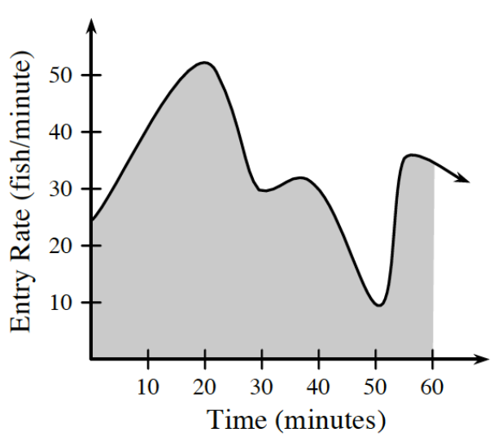

In \(\triangle ABC\), \(m\angle C = 60^\circ\), \(a = 10\), and \(b = 14\). Use the Law of Cosines to calculate \(c\).
Solve the system:
\[ \begin{aligned} 2^x+2^y &= 12 \\ 4^x-4^y &= 48 \end{aligned} \]
Solve for \(c\): \(c^4-11c^2-80=0\)
Graph each function below.
\(f(x)=-2(3)^x-7\)
\(g(x)=\log_6(x-2)\)
Use graph at right. The graph to the right shows the rate of salmon entering a fish hatchery during a \(60\) minute period.

A gate fell a couple of times during the time interval disrupting the flow of the salmon. About what time did this occur?
What does the shaded area represent?
Write each of the following rational expressions as a simplified single fraction.
\(\large{\frac{x+y}{xy}\cdot\frac{2x^2y}{x^2-y^2}}\)
\(\large{\frac{3x}{x+2}+\frac{2x}{x-2}}\)
\(\large{\frac{x}{x-1}-\frac{2}{1-x}}\) Hint: Rewrite the denominator of the second fraction.
Let \(f(x)=\left\{\begin{array}{ll}x^2 & \text{for } -2\le x<1 \\ 2-x & \text{for } 1\le x<4\end{array}\right.\)
Sketch a graph of \(y=f(x)\).
Use the graph to identify the range and zeros of the function.
Let \(h(x)=f(x-1)\). Sketch a graph of \(y=h(x)\).
Write an equation for \(h(x)\). Be sure to change the domain.
What are the range and zeros of \(h\)? How does this compare to your answer in part (b)? Explain.
Jessie’s can company makes cylindrical cans and needs help computing the amount of material that is required to create each can based on its volume and radius.
Write an algebraic expression for the surface area of the can (including the top and bottom) in terms of its radius and volume. Be sure to define all of the variables you might need to solve this problem before you start. Recall that the volume of a cylinder is \(V=\pi r^2h\).
If a can has a volume of \(34\text{ cm}^3\) and a radius of \(4\text{ cm}\), how much material is needed to create this can?